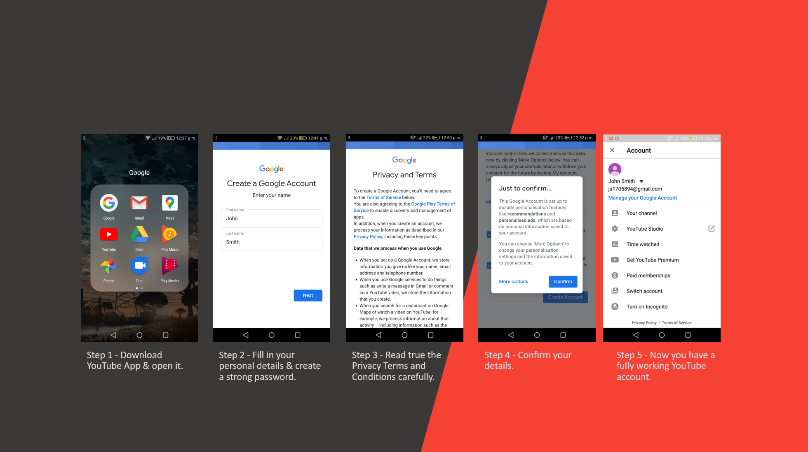

YouTube is a free online video streaming and file sharing platform. It gets billions of views daily with many of its users visiting the site to learn new skills, and participate in online discussions. Users have the ability to watch online videos, create and upload their own content, which then can be shared with millions across the globe instantly. It was first created in 2005 by three former PayPal employees by the names of Chad Hurley, Steve Chen and Jawed Karim. Since it's inception YouTube has become one of the most popular websites on the internet with many of it's visitors watching over 6 billion hours of video content daily.
Registering for a YouTube account is very easy and will take only a few minute to complete. Below is a couple of screenshots that will guide you through the process of making a Google account.
Although YouTube is mainly used for entertainment purposes, it also has a variety of other uses. One of those being Education, students can search for video tutorials on how to complete some of their schoolwork if they’re stuck on a certain aspect. Similarly, if teachers / professors would like to use a visual element to aid in explaining a concept to their students are a quick YouTube search away from finding exactly what they are looking for.
It’s rare to find a topic that won’t have any information on a subject with how huge YouTube has become and how much content has been uploaded to the service.